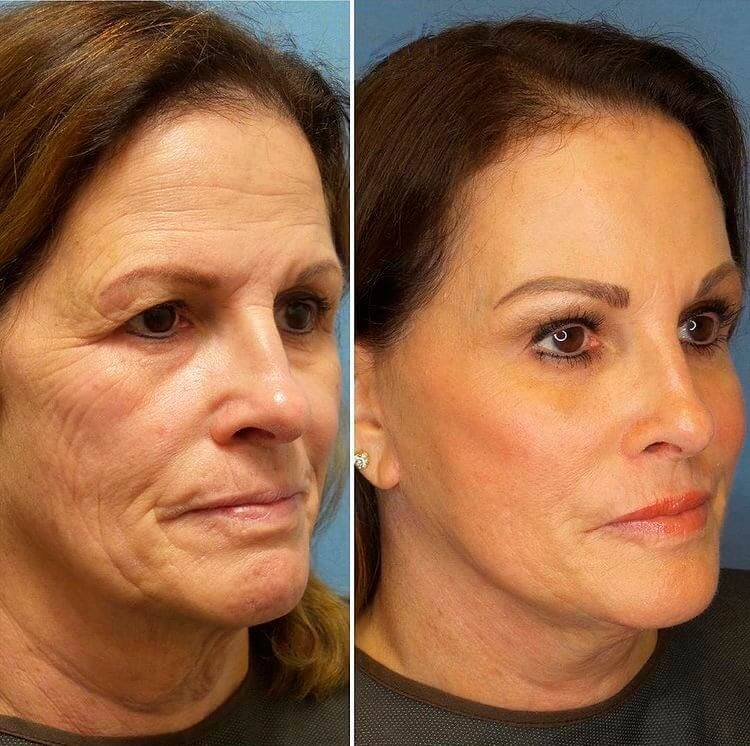

A fost oprită o femeie în timpul controlului la frontieră din cauza îngrijirii faciale anti-îmbătrânire extrem de eficiente, inventată de fiica acesteia


Datorită unui incident ciudat de pe Aeroportul Internațional Otopeni, oamenii au descoperit o descoperire științifică incredibilă în domeniul întineririi faciale, dezvoltată de o româncă obișnuită pentru a-și face mama fericită.
Recent, în Aeroportul Internațional Otopeni s-a întâmplat o poveste incredibilă. Agenții de frontieră au oprit o femeie de 45 de ani care plănuia să zboare din București către Paris. Potrivit oamenilor legii, fotografia de pașaport, evident, nu se potrivea cu chipul deținătorului acestuia.
În ciuda protestelor femeii care încercase să demonstreze că pașaportul îi aparținea și că modificările în aspectul ei au avut loc în urmă cu câteva săptămâni, când a început să folosească un produs facial anti-îmbătrânire dezvoltat de fiica ei, studentă la medicină, personalul nu a crezut-o și a arestat-o pentru a continua investigarea cazului.
"Respectăm cu strictețe instrucțiunile. Fotografia din pașaport arăta cu totul altă persoană, cu aproximativ 15 ani mai în vârstă decât persoana reală. Cel mai confuz dintre toate a fost că pașaportul fusese eliberat recent, cu aproximativ o lună în urmă. Din câte știm, nici măcar chirurgia plastică nu poate da rezultate atât de rapide, iar asta era foarte suspect."
Gabriela Bogdan (agent al poliției de frontieră, Aeroportul Internațional Otopeni)
Cu toate acestea, se pare că există un produs care dă rezultate rapide chiar și fără operație și a fost inventat de o simplă studentă româncă care a vrut să-și ajute mama să-și recapete frumusețea și tinerețea.

Bună, Maria! Ne poți spune cum ai reușit să creezi un brand anti-îmbătrânire atât de eficient încât agenții aeroportului să nu creadă că mama ta este persoana care a apărut în fotografia ei de pașaport?
- Tot ce voiam să fac era să-i mulțumesc mamei pentru că m-a crescut și și-a pus toată energia în asta... Tatăl meu ne-a părăsit acum câțiva ani. Erau vremuri foarte triste. Mama mea m-a crescut singură... I-a fost greu pentru că a trebuit să lucreze în 2 locuri pentru a-mi plăti studiile. Mulți ani, ea a fost singura care a susținut familia. Vă puteți imagina cât de greu a fost? Stresul și presiunea constantă și-au luat amploarea. Avea doar 45 de ani, dar părea mult mai în vârstă decât vârsta ei reală. Desigur, bărbații nu au observat-o și ea s-a simțit singură. Este deja destul de dificil să-ți organizezi viața personală la acea vârstă.
Ai încercat să o ajuți?
- Desigur. Cum aș putea să o văd pe mama atât de nefericită și să nu fac nimic? La urma urmei, 45 de ani nu înseamnă nimic! Este o vârstă la care oamenii încep să trăiască pentru ei înșiși și să-și organizeze viața personală! Îmi doream foarte mult să o ajut pe mama și am decis să caut un produs de întinerire pentru a-i reda frumusețea și încrederea în sine. Cu toate acestea, nici farmaciile, nici saloanele de înfrumusețare nu au oferit o mască anti-îmbătrânire cu adevărat bună.
Deci, ai decis să-ți dezvolți propria ta cremă de față?
- Sigur, la urma urmei sunt studentă la farmacie. În curând voi absolvi facultatea și voi deveni un specialist certificat. Am toate abilitățile și cunoștințele pentru asta. Am folosit doar ingrediente naturale.
Primele rezultate au fost impresionante! Cel mai bun exemplu este povestea mamei mele. Călătoria la Paris a fost cadoul meu de ziua ei. Am făcut niște bani și am decis să o înveselesc cu o excursie, astfel încât să se poată relaxa și poate să întâlnească pe cineva. A fost primul ei zbor în străinătate, iar pașaportul i-a fost eliberat cu doar o lună și jumătate înainte de plecare. Vă puteți imagina cât de mult a întinerit în această perioadă scurtă de timp în care nici măcar personalul aeroportului nu a crezut? Efectul cremei anti-îmbătrânire a fost șocant, dar credeți-mă, a fost un impact foarte pozitiv. Datorită cremei mele, acum mama pare tânără și atrăgătoare, iar acest lucru este foarte important pentru o femeie.
Produsul meu poate netezi rapid ridurile, chiar și pe cele mai profunde asociate cu vârsta. De asemenea, strânge conturul feței și șterge pungile de sub ochi. Este o formulă cu adevărat de întinerire. Văzând primele rezultate, am decis să-mi patentez formula și mă bucur că am făcut-o la timp! După publicarea brevetului, unii reprezentanți ai companiilor farmaceutice particulare occidentale m-au tot sunat cerându-mi să le vând formula, inclusiv drepturile.
Ai acceptat?
- Glumiți? Am dezvoltat acest produs de întinerire pentru mama mea și nu pentru profit. Îmi doresc ca alte femei obișnuite care nu au sute de mii de dolari pentru operații și tratamente anti-îmbătrânire să-și recapete frumusețea și tinerețea pe cont propriu acasă. Aceasta este ideea din spatele tuturor și nu voi renunța la principiile mele.
Ce ai făcut pentru a organiza producția la scară largă? Asta trebuie să fi necesitat investiții uriașe.
- Institutul European de Cercetări mi-a oferit această ocazie, am reușit să stabilim producția cremei anti-îmbătrânire la preț accesibil pentru femei din toate categoriile sociale. Și chiar am venit cu o denumire bună: .
Produsul creat de Maria este cu adevărat unic. Formularea și ingredientele sale pot da rezultate uimitoare de întinerire. Rezultatele obținute în urma primelor studii clinice i-au surprins pe toți oamenii de știință!
nu are toate dezavantajele mărcilor scumpe, cum ar fi efecte secundare și contraindicații, ca să nu mai vorbim de efectul temporar. prezintă rezultate excelente la orice vârstă si poate fi folosit fără restricții. Studiile clinice au arătat că netezește rapid ridurile profunde și elimină pielea uscată și lăsată chiar și la femeile de peste 65 de ani. își face efectul bine pentru a preveni schimbările legate de vârstă la femeile în vârstă de 20 de ani. Crema oferă o nutriție perfectă pentru piele și protejează de îmbătrânirea prematură pentru mulți ani.
Pot spune cu încredere că astăzi acesta este un produs anti-îmbătrânire unic. ".
Jasmine Cota (Director al Institutului de Cercetări)

"În încercarea de a ne lansa produsul în farmacii, am avut de-a face cu opoziția marilor corporații. Nimeni nu ar fi de acord să atingă o piață bine stabilită lansând un produs la preț mic. În mod obiectiv, s-a dovedit a fi cel mai bun produs anti-îmbătrânire dintre toate cele existente. Din păcate, lanțurile de farmacii nu și-au dorit nimic de-a face cu vânzarea unui produs atât de eficient la un preț mic. În primul rând, sunt interesați de profit.
Am luat decizia fermă de a abandona această strategie și de a vinde în numele nostru. Asta ne-a permis să vindem crema la un preț minim."
Ionuț Alexandrescu (specialistă cu experiență, Laboratorul Universității de Medicină)
Ne-am întâlnit cu mama Mariei, care a râs amintindu-și incidentul de la aeroport.
- Ce bucuroasă am fost când nu m-au crezut la ghișeul de control al pașapoartelor! Nu-mi păsa dacă nu puteam să-mi iau zborul spre Paris. Îi sunt foarte recunoscătoare fiicei mele pentru generozitatea ei. Sunt mândră de ea!
Fiica ta a spus că tu ai fost cea care a inspirat-o să creeze .
- Este foarte drăguț din partea ei. Îmi amintesc cum mi-a adus primul produs de . Pe atunci, nu era o producție de masă, era un cadou dezvoltat și creat de ea însăși. Am izbucnit în lacrimi. Am fost cu adevărat recunoscătoare
Cât timp ți-a luat să obții primele rezultate?
- Nu mai mult de o lună! Din momentul în care fiica mea mi-a făcut cadoul și până am luat zborul spre Paris, am aplicat produsul în fiecare zi și am fost uimită de rezultate. Arăt cu cel puțin 15 ani mai tânără! Cred că îți poți da seama și singur!
Și nu vorbesc doar despre frumusețe. Viața mea s-a schimbat în bine. Am devenit mai încrezătoare și chiar am fost promovată la locul de muncă. Oamenii din jurul meu au început să mă trateze cu mai mult respect și bunătate. Viața mea s-a umplut brusc de culori noi! Am devenit mai tânără nu doar pe dinafară, ci și pe dinăuntru! Și viața mea personală s-a îmbunătățit. Acum atrag atenția de la bărbați care sunt mult mai tineri decât mine! Mă consider o femeie cu adevărat fericită și am întâlnit un bărbat care mă iubește. Nu am de gând să-ți spun câți ani are, dar este mai tânăr decât mine.
Apropo, din cauza arestării de către agenților aeroportului, nu am plecat în vacanță, dar cu noul meu iubit am plecat de curând împreună în vacanță! Și toate acestea au fost posibile datorită fiicei mele și a miracolului ei . Este grozav că această cremă anti-îmbătrânire ajută toate femeile să-și îmbunătățească aspectul, să fie mai frumoase și mai tinere!
Ce zice lumea despre ?
"Acest produs este extraordinar!!! Îl vreau. Nu mă interesează, încerc să-l obțin și de 10 ori
dacă este nevoie!"
- Sofia Marcu

"Nu este nicio problemă. Fetelor, trebuie să comandăm și să
devenim mai tinere!"
- Olivia Satmari

"L-am cumpărat deja. Aici este rezultatul meu."
- Alexandru Dumitru

"Excelent!"
- Emilia Toma

"Cea mai importantă transformare are loc în tine. Mai întâi fața ta devine mai tânără, apoi
sentimentele tale. Te simți fericit și mulțumit, ceea ce nu are preț!"
- Maria Agapia

"Sunt total de acord! După ce am început să aplic această cremă, soțul meu continuă să-mi arate
atenția, parcă am fi din nou tineri. Facem sex mai des decât făceam acum 20 de ani!"
- Elisabeta Popescu

"Și aici sunt fotografiile mele. Îmi este rușine să mă uit la fotografiile mele vechi!"
-
Liliana Comna

"Sunt alături de voi! își face efectul foarte bine pentru
imperfecțiunile feței, face să dispară ridurile și pielea lăsată. Rezultatul poate fi văzut după prima
utilizare."
- Cristina Slav

"Mă bucur că am descoperit această marcă! Îmi place noua mea viață. Sunt din nou o femeie
fericită... mulțumesc!"
- Emilia Ionescu

"Majoritatea oamenilor cred că am 30 de ani. Incredibil! Odinioară îmi era rușine de aspectul meu,
dar acum îmi este rușine să spun că am 43 de ani.:)))"
- Giulia Nicolae
Important: a trecut de toate testările clinice și este disponibil pentru vânzare cu livrare în România. Cu toate acestea, datorită succesului comercial, piața a fost plină de produse contrafăcute. De asemenea, marile lanțuri de farmacii și corporațiile farmaceutice sunt susceptibile să contracareze vânzările în plus prin cumpărarea de produse noi prin crearea de site-uri web clonă unde își vând produsele lor scumpe.